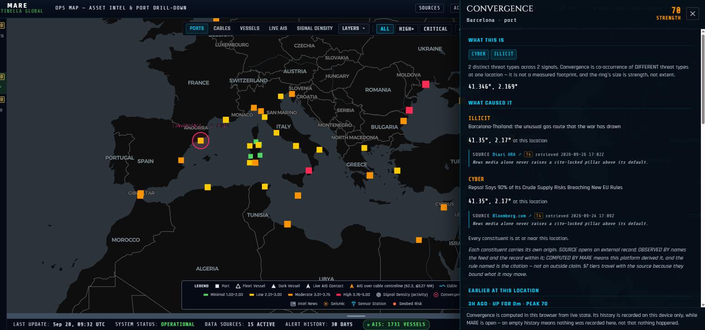
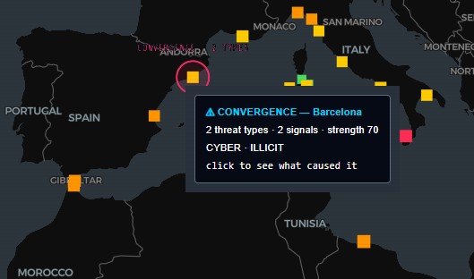
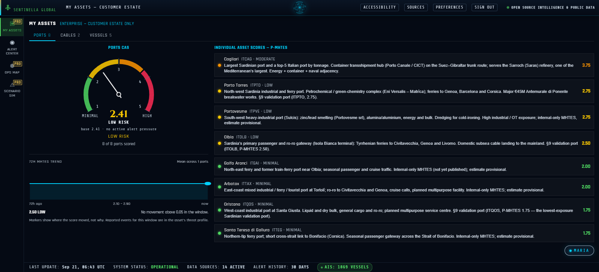

Protecting European Maritime Critical Infrastructure, one port, one cable at a time
Ports and subsea cables are what NIS2 and the CER Directive exist to protect. MARE scores the hybrid-threat exposure of each one with a published methodology whose pillars map onto the risk assessments those frameworks require — live today across the Mediterranean and its Black Sea approaches.
Every port, scored on what it exposes
A port is a cyber estate, an energy terminal and a border at once. MARE scores each one on four equally weighted pillars — strategic value, foreign actor presence, documented illicit and grey-zone activity, and cyber & infrastructure vulnerability — then opens its profile on what is happening around it right now.
- Operations at a glance. Four threat lanes — strikes & conflict, approaches, cyber & OT, enforcement & migration — with located signals listed nearest first.
- Repeated dark periods, counted. AIS silences within 50 NM of the port are logged per quarter, discounted where GNSS jamming explains them.
- A 90-day Port Risk Signal and an exportable PDF/A threat report per port.
Watching the cable, not just the coast
A cable is a line on the seabed, so MARE reads it as one. Each monitored route is profiled landing to landing — depth, seabed exposure, and every vessel and event near it plotted at its kilometre along the route.
- Who is over the cable, worst first. Loitering hulls, contacts on the centreline and dark vessels inside the corridor, ranked by behaviour.
- Seabed context. A GMRT depth profile marks every stretch shallower than 200 m, where anchors and trawls reach.
- Seismic and radar checks. Quakes near the corridor feed the exposure score; a suspect hull can be checked against Sentinel-1 radar passes.

When unrelated signals meet at one asset
A dark vessel is common. GPS interference is common. A dark vessel, a spoofed track and a jamming cell beside the same cable landing in the same hour is not. MARE watches for signals of different kinds clustering near one asset and raises a convergence alert when they do.
- Every constituent shown. Open the alert to see each signal, where it sits, its source and that source's credibility tier.
- Built from independent sources. AIS gaps, spoofed tracks, GNSS interference, cable loiters, seismic and conflict events, and intel reports.
- Read as a prompt, not a verdict. Convergence tells your team where to look first — it is not a confirmed attack, and MARE never presents it as one.


Rehearse your worst day before it happens
Run a hybrid-threat scenario against your port and your region and watch the disruption spread through the Mediterranean lane network — rerouted traffic, congestion at neighbouring ports, and the days it takes to recover.
- Start from a real playbook. Cable sabotage with Sicilian Channel harassment, a ransomware lockdown at Piraeus, a GNSS jamming campaign at Gibraltar, a strait closure.
- Or describe your own in plain language — the scenario is parsed and run on a deterministic engine, so the same scenario gives the same answer.
- Enterprise deep simulation adds multi-agent modelling of how operators, authorities and markets respond.
Your assets, scored on your own sensor data
Enterprise clients stream their own hardware sensor feeds into a personalised panel scoped to their assets — every port and cable scored individually and rolled into one portfolio-wide view, with your tracked vessels alongside.
- One portfolio score. A single gauge for your whole estate, with its 72-hour trend.
- Every asset explained. Each score sits beside the facts behind it — tonnage, energy handling, cable landings.
- Honest about confidence. Validated scores are marked as validated; provisional estimates say so.

One methodology.
Mapped to NIS2 and CER.
Every MARE score is four equally weighted, cited pillars — and each pillar lines up with what NIS2 and the CER Directive ask you to assess.
Open the methodology & NIS2/CER mapping Close the methodology
Your risk, distilled to one number.
Pillars by asset class
| Asset Class | Slot 1 · Strategic | Slot 2 | Slot 3 · Activity | Slot 4 · Cyber (Shared) |
|---|---|---|---|---|
| PortsP-MHTES | SVStrategic Value | FAPForeign Actor Presence | IGAIllicit & Grey-Zone Activity | CIVCyber & Infra Vulnerability |
| CablesC-MHTES | SVStrategic Value | MAPMaritime Activity Pressure | IEVInfra Exposure Vulnerability | CIVCyber & Infra Vulnerability |
| VesselsV-MHTES | RSRoute Strategic Value | FAPForeign Actor Presence | OEVOperational Exposure & Vuln. | CIVCyber & Infra Vulnerability |
| Routesno MHTES | — scored by Corridor Risk (0–1, independent, event-driven) — not part of the MHTES pillar model — | |||
Where each pillar lands. MHTES was built as an exposure assessment, which is what both directives ask critical entities to produce. This is how its pillars line up with the obligations.
| MHTES pillar | What it measures | Supports |
|---|---|---|
| SV · Strategic Valueports & cables | How much depends on the asset — tonnage, energy handling, countries connected, redundancy. | CER Art. 12 · the consequence side of the entity risk assessment |
| FAP · Foreign Actor Presenceports | Non-domestic calls and foreign state-linked infrastructure involvement. | CER Art. 12 · hybrid and human-made threats · NIS2 Art. 21 · supply-chain security |
| IGA · MAP · IEVactivity & physical exposure | Documented grey-zone activity at ports; vessel pressure, depth and seabed exposure along cables. | CER Art. 12 · all-hazards risk assessment, including natural hazards |
| CIV · Cyber & Infrastructure Vulnerabilityshared by every asset class | Port community systems, OT, cable landing stations. | NIS2 Art. 21 · cybersecurity risk-management measures |
| Score history & citationsevery record | Each pillar carries its sources, source tier and retrieval date; every revision is kept. | Evidence for CER Art. 12 reviews and NIS2 Art. 20–21 management oversight |
MARE supplies evidence for these obligations; it does not by itself make an entity compliant. Scope differs by member state — Italy's transposition is covered in detail in our compliance guide.
Built for the operators
NIS2 and CER name.
Who we serve
Why Sentinella
- A methodology you can show an auditor.
- Every score is four cited pillars with a source tier and retrieval date, regression-tested against published validation ports.
- Mediterranean-native.
- Embedded in the port communities and institutions that generalist platforms cover from a distance.
- Your estate, your sensors.
- Your own ports, cables and hardware feeds scored individually and rolled into one portfolio view.
- My Assets — your portfolio scored on your own sensor feeds
- NIS2 / CER / Circ. 177 compliance reports — per-asset PDF/A exports
- Deep simulation — multi-agent hybrid-threat scenarios for your port and region
- Response plans on the J3/J35 framework
- SSO, team seats, priority support & SLA
- API access, custom feeds & integrations Add-on
Individual analyst? Basic is free — the live Alert Center. Launch now → Pro is 19,99 €/month — Ops Map, unlimited Maria, Scenario Simulator. Request access →